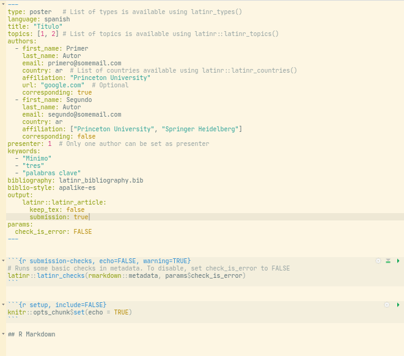

Introducing: latinr, the R package
In this edition of LatinR we showcase a new way of submit presentations entirely from your R session!
The aim is to make the whole process of creating, formatting and submitting your work as easy as possible. With the latinr package you can write your presentation using R Markdown adding the submission details in the header, compile it to PDF using the conference template and then submit it without the need of filling any form.
Note that none of this is at all mandatory. If you don’t feel comfortable using R Markdown, you can use whatever other tool you enjoy to create your PDF, and if you prefer, you can always use the EasyChair web interface to submit your work.
Also note that article submission is somewhat experimental at the moment, which means that if you do use it, go to the EasyChair website to be certain that your submission is correct.
Creating LatinR submissions with latinr
First things first, you need to install the package using devtools::install_github("latinr/latinr").
If you use RStudio, you can create an R Markdown template by going to File -> New File -> R Markdown -> From Template and selection “LatinR submission article”. There, you can name your file, select its folder and then press OK to create a base file you can begin to complete.
You’ll notice that all the submission details are handled by the header. You can complete them there or the function latinr::latinr_wizard() to launch a graphical user interface that will guide you through the process and finally show you a valid header that you can copy and paste into your file.

Alternatively you can use the wizard and click “Save” (on the top-right corner) to create the same base file but pre-populated. In any case, the R Markdown file should look something like this:

The first chunk performs some basic checks on the metadata each time the file is rendered. We recommend to leave it there so that any error comes to light as soon as possible. The rest is the R Markdown demo document. You can “knit” it to test that you’ve got the proper LaTeX installation and then start writing your presentation for LatinR!
Submitting an article with latinr
So far, latinr allows you to create a correctly anonymised PDF following the conference template. You can send it manually through the EasyChair website or, if you like, using latinr.
In any case, you’ll need to sing up at EasyChair. Then, you can optionally save your login details using lating::latinr_password_set(), which will promt you for your username and password. This is not mandatory but can make things easier. You might need to install que keyring package, in which case you’ll get an informative error.
Finally, the submission is done with latinr::latinr_submit(). By default it checks if there’s a single .Rmd file in the current working directory and, if it finds it, takes it as the file to be submitted. Then, it will should you the submission details so you can check that everything is correct, it then renders and shows you the resulting PDF so you can also verify it, and finally it performs the submission.
Optionally, in case you have a PDF created by any other medium, you can pass its path as an argument and use the .Rmd only to populate the submission details.
As we said before, this process is somewhat experimental an integration with web forms is notoriously complex. For that reason, it is of the utmost importance that you go to the EasyChair website to ascertain that your submission has gone through correctly. In the event of any error, you can always correct them manually.
Absolutely optional
Each step of the process is completely optional. You can use latinr to create and submit your work, only to create it, only to submit it, or not at all. Do whatever makes you more comfortable!
But if you do use latinr and find any error o have any suggestion, then don’t hesitate to contact us! The best way is by opening an issue on the GitHub repository or sending us a message through our Slack, or you can email the package maintainer with packageDescription("latinr")$Maintainer. This is all new to us and we wish to leverage the community to improve it for the future!